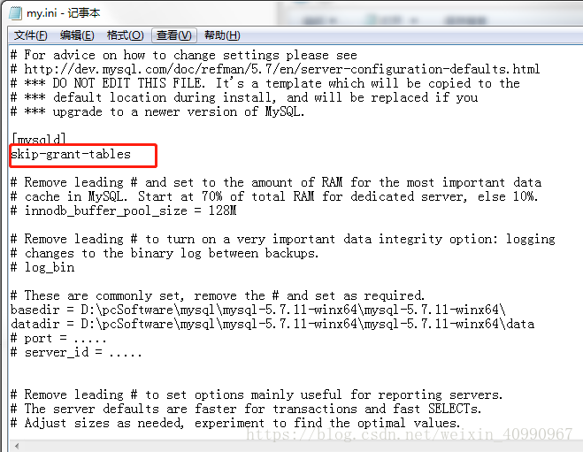
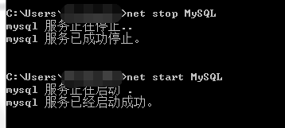

一、目录（整体看一波这本书怎么讲的mysql）
第一章——了解SQL
第二章——MySQL简介
第三章——使用MySQL
第四章——检索数据
第五章——排序检索数据
第六章——过滤数据
第七章——数据过滤
第八章——用通配符进行过滤
第九章——用正则表达式进行搜索
第十章——创建计算字段
第十一章——使用数据处理函数
第十二章——汇总数据
第十三章——分组数据
第十四章——使用子查询
第十五章——联结表
第十六章——创建高级联结
第十七章——组合查询
第十八章——全文本搜索
第十九章——插入数据
第二十章——更新和删除数据
第二十一章——创建和操纵表
第二十二章——使用视图
第二十三章——使用储存过程
第二十四章——使用游标
第二十五章——使用触发器
第二十六章——管理事务处理
第二十七章——全球化和本地化
第二十八章——安全管理
第二十九章——数据库维护
第三十章——改善性能
和正则表达式必知必会一样，出自于(BenForta)福塔大师傅，看起来还是很舒服，除了常规大家使用的几条语句外对于包括联结的使用、子查询、正则表达式和基于全文本的搜索、存储过程、游标、触发器、表约束，等等有详细的描述，完整看下来还是有收获的
二、忘记mysql密码或者初始化如何重置密码的两个方法（是不是很突兀，尴尬主要是遇到太多次了，还是记一下跳过密码登陆直接修改）
方法1、
- 进入dos窗口，停止mysql服务：net stop mysql
- 进入mysql的安装目录，进入bin目录
- mysqld –skip-grant-tables
- 重新打开一个dos窗口，进入mysql的bin目录
- mysql -u root -p
- 不需要输入密码，直接回车
- 直接修改密码
update mysql.user set password=PASSWORD(“root”) where User=”root”; - flush privileges; 刷新权限
退出dos窗口之后，就可以重新建立mysql连接，用新密码登陆mysql
方法2、
- 修改本地mysql目录中的my.ini文件（如果没有可自己新建）
添加skip-grant-tables
 - 进行mysql的重启启动操作
 - 直接输入mysql -u root -p
然后不输入密码直接回车就可以进入数据库
执行sql修改root用户的密码：
update user set authentication_string = password(“123456”) where user = “root”;
三、大致总结一丢丢
第1章 了解SQL
数据库：保存有组织的数据的容器（通常是一个文件或一组文件）
模式：关于数据库和表的布局及特性信息。
主键：一列（或一组列），其值能够唯一区分表中每个行。
表：某种特定类型数据的结构化清单。
列：表中的一个字段，所有表都是由一个或多个列组成的。
行：表中的一条记录。
第2章 MySQL简介(不区分大小写)
在win终端下启动MySQL，不带分号
C:\Users\Dylan>mysql -u root mysql
退出终端，不带分号
mysql> quit
mysql> exit推荐使用图形交互的数据库客户端，比如Navicat
第3章 使用MySQL
mysql> show databases;
返回数据库数据库
mysql> use databases_name;
选择数据库
mysql> show columns from table_name;
mysql> describe table_name;
返回一个表中各个字段的详细信息。第4章 检索数据
SQL语句以；来结束，可以delimiter来切换。比如用delimiter \\来切换为用\\来结束。(对于后面函数调用尤其重要)第5章 排序检索数据
如果在多个列上执行降序排序，必须对每个列指定DESC关键字。反之ASC（放在最末尾
select * from table_name order by id DESC(ASC)第6章 过滤数据
通过WHERE子句以及子句操作符来作为过滤条件。第7章 数据过滤
多数语言一样）在处理OR操作符之前，优先处理AND操作符。如下代码：
select prod_name, prod_price
from products
where vend_id = 1002 or vend_id = 1003 and prod_price >=10;
#它理解为由供应商1003制造的任何价格为10美元（含）以上的产品
或者由供应商1002制造的任何产品，而不管其价格如何。第8章 用通配符进行过滤
MySQL在执行匹配时默认不区分大小写。不过，根据配置搜索市可以区分大小写的。
LIKE操作符包括两个匹配符%和_，其中%表示任何字符出现任意次数，_只匹配单个字符而不是多个字符。第9章 用正则表达式进行搜索
LIKE和REGEXP之间的一个重要差别
mysql> select prod_name from products where prod_name like '1000' order by prod_name;
Empty set (0.04 sec)
mysql> select prod_name from products where prod_name regexp '1000' order by prod_name;
+--------------+
| prod_name |
+--------------+
| JetPack 1000 |
+--------------+
1 row in set (0.00 sec)
#如上执行上面的两条语句，第一个不返回数据，而第二条返回一行。原因如下：
#LIKE是全匹配，如果被匹配的文本只是列值的一部分，LIKE将不会找到它，相应的行也不会被返回。
#而REGEXP在列值内进行匹配，如果匹配的文本在列值中出现，REGEXP将会找到它，相应的行降被返回。这是一个重要的差别。第10章 创建计算字段
可能单纯为了好看吧，逃（
select Concat(vend_name,'(',vend_country,')')
from venders
order by vend_name;第11章 使用数据处理函数
主要是文本处理函数对日期格式的管理，数值处理函数，我觉得可以具体用时针对性查一下
常用的文本处理函数
Left() 返回串左边的字符
Length() 返回串的长度
Locate() 找出串的一个子串
Lower() 将串转换为小写
LTrim() 去掉串左边的空格
Right() 返回串右边的字符
RTrim() 去掉串右边的空格
Soundex() 返回串的SOUNDEX值
SubString() 返回子串的字符
Upper() 将串转换为大写Abs() 返回一个数的绝对值
Cos() 返回一个角度的余弦
Exp() 返回一个数的指数值
Mod() 返回除操作的余数
Pi() 返回圆周率
Rand() 返回一个随机数
Sin() 返回一个角度的正弦
Sqrt() 返回一个数的平方根
Tan() 返回一个角度的正切第12章 汇总数据
这5个聚集函数，AVG()，COUNT()，MAX()，MIN()，SUM()第13章 分组数据(group by)
HAVING和WHERE的差别
WHERE在数据分组前进行过滤，HAVING在数据分组后进行过滤。第14章 使用子查询
要求MySQL4.1以上的版本,一般采用另外一个select的返回值当做当前select IN里面的参数
select cust_id
from orders
where order_num IN(select order_num
from orderitems
where prod_id=2);第15章 联结表
简单地说，联结是一种机制，用来在一条SELECT语句中关联表，因此称之为联结。使用特殊的语法，可以联结多个表返回一组输出，联结在运行时关联表中正确的行。
创建联结
SELECT vend_name, prod_name, prod_price
FROM vendors, products
WHERE vendors.vend_id = products.vend_id;完全限定列名 在引用的列可能出现二义性时，必须使用完全限定列名（用一个点分隔的表名和列名）。如果引用一个没有用表名限制的具有二义性的列名，MySQL将返回错误。
笛卡尔积(是不是很熟悉)
由于没有联结条件的表关系返回的结果为笛卡尔积。检索出的行的数目将是第一个表中的行数*第二个表中的行数。
SELECT vend_name,prod_name,prod_price FROM vendors,products
ORDER BY vend_name,prod_name;第16章 创建高级联结(有点复杂，故不全部细讲)
16.1 使用表别名
16.2 使用不同类型的联结
16.2.1 自联结
16.2.2 自然联结
16.2.3 外部联结
16.3 使用带聚集函数的联结
16.4 使用联结和联结条件
16.5 小结
内部联结
目前为止所用的联结称为等值联结。它基于两个表之间的相等测试。这种联结也称为内部联结。事实上，对于这种联结可以使用稍微不同的语法来明确指定联结的类型。
SELECT vend_name,prod_name,prod_price FROM vendors INNER JOIN products ON vendors.vend_id=products_vend_id;联结多个表
SQL对一条SELECT语句中可以联结的表的数目没有限制。创建联结的基本规则也相同。
SELECT prod_name,vend_name,prod_price,quantity FROM orderitems,products,vendors WHERE products.vend_id=vendors.vend_id
AND orderitems.prod_id=products.prod_id
AND order_num='20005'性能考虑：MYSQL在运行时关联指定的每个表以处理联结，这种处理可能非常耗费资源的。有时候可以通过不同的方式来调优。
比如返回订购产品TNT2的客户列表。
SELECT cust_name,cust_contact FROM customers WHERE cust_id IN (SELECT cust_id FROM orders WHERE order_num IN(SELECT order_num FROM orderitems WHERE prod_id='TNT2'));其实上面的句子并不是最有效的
SELECT cust_name,cust_contact FROM customers,orders,orderitems WHERE customers.cust_id=orders.cust_id AND orderitems.order_num=orders.order_num AND prod_id='TNT12'自联结
比如知道ID 为DTNTR的物品存在问题，因此想知道生产该物品的供应商生产的其他物品是否也存在这种问题
SELECT prod_id ,prod_name FROM products WHERE vend_id=(SELECT vend_id FROM products WHERE prod_id='DTNTR');其等价于下面的语句
SELECT p1.prod_id,p1.prod_name FROM products AS p1products AS p2 WHERE p1.vend_id =p2.vend.id AND p2.prod_id='DNTR';第17章 组合查询
组合查询适用于下面两种情境中：
1、从多个表中查询出相似结构的数据，并且返回一个结果集
2、从单个表中多次SELECT查询，将结果合并成一个结果集返回。
Union有他的强大之处，详细介绍之前，首先明确一下Union的使用注意规则。
1、Union必须由两条或者两条以上的SELECT语句组成，语句之间使用Union链接。
2、Union中的每个查询必须包含相同的列、表达式或者聚合函数，他们出现的顺序可以不一致（这里指查询字段相同，表不一定一样）
3、列的数据类型必须兼容，兼容的含义是必须是数据库可以隐含的转换他们的类型
我们可以使用Union All操作符来取消自动合并功能
select user_id,user_nickname,user_status from yy_user where user_status = 1
UNION ALL
select user_id,user_nickname,user_status from yy_user where user_id > 3
结果排序
(select user_id,user_nickname,user_status from yy_user where user_status = 1)
UNION ALL
(select user_id,user_nickname,user_status from yy_user where user_id > 3)
order by user_id desc
第18章 全文本搜索
MySQL支持几种基本的数据库引擎，但并非所有的引擎都支持全文本搜索。两个最常使用的引擎为MyISAM和InnoDB，前者支持全文本搜索，后者就不支持。
当我们想利用全文本搜索得到 包含MySQL内容的数据。
如下：
select * from test_text where match(content) against('MySQL');上面语句中 match(content) 指示MySQL针对指定的列进行搜索，注意：传递给match()的值必须与fulltext()定义中的相同。against(‘MySQL’)指定词MySQL作为搜索文本。
第19章 插入数据
1、正因为没有字段名，则values中值得顺序必须与字段在表中顺序一致。
基本语法：
INSERT INTO 表名 VALUES(值1，值2，....);2、为表的指定字段添加数据
基本语法：
INSERT INTO 表名（字段1，字段2，...）
VALUES (值1，值2，...);第20章 更新和删除数据
UPDATE 语句
基本语法：
UPDATE 表名
SET 字段名1=值1[,字段名2=值2，...]
[WHERE 条件表达式]删除数据
即，对表中存在的记录进行删除。
基本语法：
DELETE FROM 表名 [ WHERE 条件表达式 ] ;删除指定列
基本语法：
alter table tablename drop columnname;第21章 创建和操纵表
为了利用CREATE TABLE创建表，必须给出下列信息：
1 新表的名字，在关键字CREATE TABLE之后给出
2 表列的名字和定义，用逗号分隔
CREATE TABLE table
(
column_id int NOT NULL AUTO_INCRMENT,
columnOne char(20) NOT NULL DEFAULT 1,
columnOne char(20) NOT NULL ,
column char(20) NOT NULL ,
.....
PRIMARY KEY ( column_id)
) ENGINE = InnoDB如果表已经存在，则必须先删除后在创建他，不可以直接覆盖。如果仅想在表没有存在的情况下创建它，应该在表名后给出 IF NOT EXISTS
使用NULL值 如果不指定列为NOT NULL则它默认是NULL
主键再介绍 主键的值必须是唯一的。创建主键时可以用单列做主键PRIMARY KEY(columnOne,columnTwo)，也可以使用多列做主键PRIMARY KEY(columnOne,columnTwo).主键值不允许为NULL
引擎搜索
1 InnoDB是一个可靠的事务处理引擎，它不支持全文本搜索。
2 MEMORY 在功能上等同于MySAM，但由于数据存储在内存，所以速度更快（特别适用于临时表）
3 MySAM是一个性能极高的引擎，它支持全文本搜索，但不支持事务处理
第22章 使用视图
视图中不存放任何数据，在使用SQL语句访问视图的时候，返回的数据时MySQL从其他表中生成的。视图和表在同一个命名空间，在很多地方对于视图和表是同样对待的。不过也有不同，不能对视图创建触发器，不能使用DROP TABLE命令删除视图。
[1] 创建一个视图：
create view Oceania as
select * from Country where Continent ='Oceania'
with check option;[2] 删除视图
drop view view_name;[3] 使用视图
select * from view_name;第23章 使用存储过程(类似于函数)
存储过程，是为了完成一个复杂任务，而编写的多条sql语句的集合，语句执行次序不定，需要根据检索条件判断。
存储过程实际上是一种函数，因此存储过程名后要加括号（），来放置参数，即使没有参数也要括号。
创建存储过程
返回产品的平均价格：
delimiter //
create procedure product_avgprice() #括号来放置参数，即使没有参数也要括号。
beginselect avg(prod_price) as avg_price
from products;
end//
;自定义分隔符：
DELIMITER // 自定义定界符、分隔符，除了\，都可以作为分隔符。
自定义分隔符作用：替换系统分隔符-分号（;），防止系统报错。因为系统分不清（;）是存储过程结尾，还是sql语句结尾。
执行存储过程
例：查询产品平均价：call product_avgprice(); #括号来放置参数，即使没有参数也要括号。
存储过程
例：删除product_avgprice2存储过程：
drop procedure if exists product_avgprice2; #注意这里过程名称后不带括号
第24章 使用游标
在检索出来的行中，前进或者后退一行或多行，就需要用到所谓的“游标”。游标不是某个SELECT语句，但是它是被该语句检索出来的结果集，另外，MySQL游标只能用于存储过程（和函数）。
创建游标
使用DECLARE和CURSOR关键字：
CREATE PROCEDURE processorders()
BEGIN
DECLARE ordernumbers CURSOR
FOR
SELECT order_num FROM orders;
END;打开和关闭游标
因为游标局限于存储过程，所以如果存储过程处理完成后，游标就会消失。所以往往在存储过程中要关键字OPEN进行打开。另，游标相关的SELECT查询语句，在定义时是不执行的，在OPEN时才执行查询，存储检索出的数据以供浏览和滚动。在游标使用完成后，使用CLOSE进行关闭：
第25章 触发器的使用
触发器是MySQL响应DELETE,INSERT,UPDATE而自动执行的一条MySQL语句,其他语句不支持触发器。
创建触发器时，需要4个条件；
唯一的触发器名
触发器关联的表
触发器应该响应的活动
触发器何时执行
MySQL中触发器名在每个表中必须唯一，但是在同一个数据库中的两个表可具有相同名字的触发器。这个条件在其他的DBMS中是不允许的，所以为了统一，最好在同一个数据库中，触发器名设置成唯一的。
创建触发器
CREATE TRIGGER newproduct AFTER INSERT ON products
FOR EACH ROW SELECT 'Product added';
CREATE TRIGGER--创建一个叫newproduct的新触发器
AFTER INSERT--此触发器将在INSERT语句成功后执行
FOR EACH ROW--代码对每个插入行执行删除触发器
DROP TRIGGER newproduct;使用触发器
INSERT触发器
可以引用一个叫NEW的虚拟表，来访问插入的行
DELETE触发器
引用一个叫OLD的虚拟表，来访问被删除的行
UPDATE触发器
书中缺页未介绍
第26章 管理事务处理
MySQL中有好几种引擎，但是不是每种引擎都支持事务处理
常用的引擎中InnoDB支持事务，MyISAM不支持事务
几个名词:
事务transaction
回退rollback
提交commit
保留点savepoint
控制事务管理
ROLLBACK
SELECT * FROM ordertotals;
START TRANSACTION;
DELETE FROM ordertotals;
SELECT * FROM ordertotals;
ROLLBACK;
SELECT * FROM ordertotals;注意：事务用来管理INSERT、UPDATE和DELETE。不能回退CREATE或者DROP操作
更改默认的提交行为
SET autocommit=0注意：autocommit标志是针对每个连接，而不是服务器；
第27章 国际化与本地化
字符集和校对顺序
字符集：字母和符号的集合
编码：某个字符集成员的内部表示
校对：规定字符如何比较的指令
使用字符集和校对顺序
show character set; – 显示所有可用的字符集以及描述和默认校对
SHOW COLLATION; – 显示所有可用的校对以及它们适用的字符集
SHOW VARIABLES LIKE ‘character%’;
SHOW VARIABLES LIKE ‘collation%’; – 为了确定所用的字符集和校对
CREATE TABLE mytable
(
column1 INT,
column2 VARCHAR(10)
) DEFAULT CHARACTER SET hebrew
COLLATE hebrew_general_ci;
CREATE TABLE mytable
(
columnn1 INT,
columnn2 VARCHAR(10),
column3 VARCHAR(10) CHARACTER SET latin1 COLLATE latin1_general_ci
) DEFAULT CHARACTER SET hebrew
COLLATE hebrew_general_ci;SELECT * FROM customers
ORDER BY lastname, firstname COLLATE latin1_general_cs;第28章 安全管理
1.访问控制
管理访问控制需要创建和管理用户账号
有的用于管理，有的供用户使用，有的供开发人员使用；
建议不要使用root；
2.管理用户
-- 获得用户列表
SELECT user FROM user;
-- 创建用户账号，ben是用户名，BY后面是口令；
CREATE USER ben IDENTIFIED BY 'p@$$w0rd';
-- 删除用户账号
DROP USER bforta;
-- 设置访问权限
SHOW GRATNS FOR bforta; -- 显示权限
GRANT SELECT ON crashcourse.* TO bforta; -- 添加SELECT权限
REVOKE SELECT ON crashcourse.* FROM bforta; -- 删除SELECT权限
-- 设置口令(不指定用户，则默认更新当前用户口令)第29章 数据库维护
1.备份数据
使用命令行实用程序mysqldump转储所有数据库内容到某个外部文件；
可用命令行实用程序mysqlhotcopy从一个数据库复制所有数据；
可以使用MySQL的BACKUP TABLE或SELECT INTO OUTFILE转储所有数据到某个外部文件；
2.进行数据库维护
-- 用来检查表键是否正确；
ANALYZE TABLE orders;
-- 用来针对许多问题对表进行检查；
CHECK TABLE orders,orderitems;3.查看日志文件
错误日志；
查询日志；
二进制日志；
缓慢查询日志；
第30章 改善性能
一大堆优化性能的建议
四、操作符优先级
优先级 运算符
(最高) !
-（负号）,~（按位取反）
^（按位异或）
*,/(DIV),%(MOD)
+,-
>>,<<
&
|
=(比较运算),<=>,<,<=,>,>=,!=,<>,IN,IS NULL,LIKE,REGEXP
BETWEEN AND,CASE,WHEN,THEN,ELSE
NOT
&&,AND
XOR
||,OR
(最低) =(赋值运算),:=